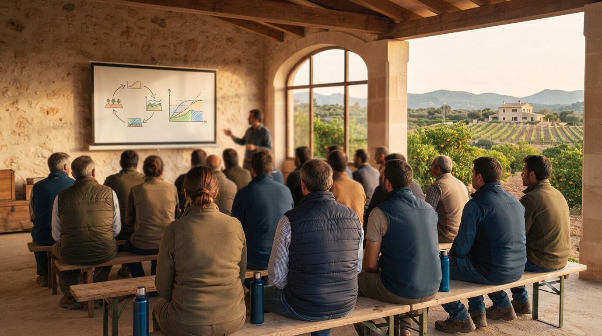

Formación agrícola a medida para entidades y empresas
Cursos y jornadas técnicas diseñados para cooperativas, comunidades de regantes, ayuntamientos y empresas del sector, impartidos por un ingeniero en activo, no por un temario genérico.

Formación pensada para quien ya trabaja en el sector
La normativa agraria, la PAC y las exigencias técnicas cambian cada campaña, y muchas cooperativas, comunidades de regantes o ayuntamientos necesitan mantener a su personal y a sus socios al día sin depender de cursos genéricos poco aplicados a su realidad. El contenido se adapta al perfil real de los asistentes: técnicos, personal administrativo, agricultores socios o empleados municipales.
Toda la formación se apoya en casos reales de la Comunitat Valenciana (DANA, sequía, cambios normativos recientes) y en la experiencia directa de proyectos ejecutados, no solo en teoría.
Temas más solicitados
- PAC, ayudas y condicionalidad reforzada: qué cambia cada campaña y cómo evitar incidencias.
- Cuaderno de explotación y trazabilidad de tratamientos fitosanitarios.
- Riego eficiente, telecontrol y autoconsumo energético en la explotación.
- Normativa de edificaciones e instalaciones agrarias: qué se puede construir y cómo legalizarlo.
- Sostenibilidad y huella de carbono aplicada a explotaciones y cooperativas.
- Segregaciones, deslindes y gestión documental de parcelas para personal administrativo.
Cómo se organiza
Cada formación se diseña a medida tras una reunión previa para concretar objetivos, perfil de los asistentes y duración. Se puede impartir de forma presencial, online o mixta, en formato de jornada puntual o curso de varias sesiones, y adaptarse a la bonificación de formación para empresas cuando la entidad cumple los requisitos.
💡 ¿No sabes por dónde empezar?
Cuéntame el perfil de tu entidad y el objetivo de la formación, y te propongo un programa orientativo sin compromiso.
Solicitar propuesta formativaPreguntas frecuentes
¿La formación puede impartirse online?
Sí, se puede organizar de forma presencial, online o mixta, según lo que mejor se adapte a la entidad y a los asistentes.
¿La formación es bonificable?
Puede adaptarse a la bonificación de formación para empresas cuando la entidad cumple los requisitos; se valora en la reunión previa según el caso.
¿Cuánto dura una jornada formativa?
Depende del tema y del perfil de los asistentes: puede ser una jornada puntual de pocas horas o un curso de varias sesiones. Se define junto con la entidad antes de empezar.
¿Podéis adaptar el contenido a un grupo con distintos niveles de conocimiento?
Sí, el contenido se diseña a medida tras conocer el perfil real de los asistentes (técnicos, personal administrativo, socios agricultores), para que resulte útil a todos independientemente de su nivel previo.